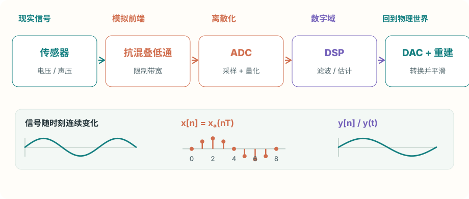
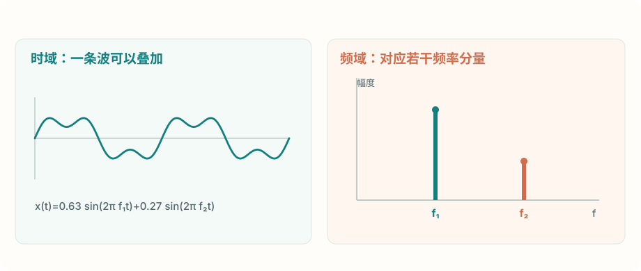

Signal · System · Insight / 01
数字信号处理：从物理波形到数字样本
采样是时间离散化，量化才是幅度离散化。理解这一差别，才能正确设计信号链。
声音进入计算机，究竟在哪里发生变化？
麦克风记录的是连续时间电压；处理器操作的是一列带有整数索引的数字。连接两者的核心不是简单“把曲线切成点”，而是由模拟频带控制、采样、量化与数字运算组成的一整条链路。要理解为什么高频可能被错误识别为低频，首先必须区分这些步骤。
用 xₐ(t) 表示连续时间信号，x[n] 表示第 n 个离散时间样本，q[n] 表示已经量化为有限幅度级的数字值。离散时间不自动意味着有限位宽；在理论上，x[n] 的每一个样本仍可以是任意实数。
这门学科要处理的核心问题可以整理为一条可检验的因果链：什么信息需要保留？用什么采样率测量？离散系统如何改变它？怎样验证计算没有扭曲原来的信号结构？
沿着处理链，逐段追踪信号对象

传感器：把声音或其他物理量变成随时间变化的电信号。模拟前端：限制幅度及带宽，让带外频率在进入采样器前得到抑制。ADC：将各时刻的电压样本变成整数码字。DSP：通过卷积、变换、检测或自适应算法加工数字序列。需要播放音频时，DAC 与模拟输出滤波负责重建可用于驱动负载的电压。
两类低通滤波器切勿混淆：采样前的抗混叠滤波器阻止原信号的不同频率折叠到同一数字频率；数模转换后的重建滤波器用于消除由输出保持或插值造成的高频镜像。两者的输入位置、工程约束和任务均不同。
从 xₐ(t) 得到 x[n]：单位与推导
设采样率为 fₛ Hz，每秒采 fₛ 次；采样间隔 Tₛ=1/fₛ 秒。样本 x[0]、x[1]、x[2] 分别读取原波形在 0、Tₛ、2Tₛ 时刻的数值。等间隔理想采样可写成：
式（1）：n 是整数，fₛ 以 Hz 为单位，Tₛ 以秒为单位。
例如，一个 2 Hz 的连续正弦在 fₛ=16 Hz 下变为 x[n]=sin(πn/4)。每个采样点相隔 1/16 秒，因此相位每一步增加 π/4。数字角频率通常用 rad/sample 表示；不能直接把 Hz 当作 rad/sample 使用。
式（2）：当 f=2 Hz、fₛ=16 Hz，ω=π/4 rad/sample。
这只是采样，还没有限制幅值等级。若对 x[n] 做步长为 Δ 的最近邻均匀量化，而且没有过载削顶，则最大舍入误差为半个步长：
式（3）：误差上界不是噪声一定服从均匀分布的证明。
为什么需要时域和频域两张地图？

当信号含有多个振荡分量时，单看时间波形不容易直接看出“有哪些频率”。频域表示把每个频率成分的强弱分离出来。后续 DTFT、DFT 与 FFT 将回答如何从样本计算这种表示；这里只需理解：时域和频域表达的是同一个信号的不同方面。
频域并不神奇地恢复所有丢失的数据。若模拟频率在采样时已混叠到一起，DFT 只能分析已经进入序列的数字频率，而不能仅靠结果反推唯一的原模拟频率。
用确定性程序验证采样与量化
动手验证：选择 2 Hz 正弦的采样率 fₛ（Hz）
杆状图的横轴是离散索引 n。交互仅用于辅助验证，全部关键定义和结论均可在前文独立阅读。
把采样率逐渐降到 4 Hz，观察固定相位的样本可能退化为全零或重复值；采样定理的边界位置不能不加条件地当作可靠恢复点。下面的程序还验证了在无过载情况下，步长 0.25 的量化误差不超过 0.125。
from math import pi, sin
def sample_sine(f=2, fs=16, count=9):
return [sin(2*pi*f*n/fs) for n in range(count)]
def quantize(x, delta=0.25):
return round(x/delta)*delta
x = sample_sine()
assert all(abs(quantize(v)-v) <= 0.125+1e-12 for v in x)完整可执行示例与断言（01_pipeline.py）；本地运行 python examples/01_pipeline.py。
什么时候模型会失效？
- 没有限带：原模拟频谱可越过奈奎斯特边界，混叠会不可逆地改变样本可辨识的信息。
- 仅有有限长度：理想 sinc 插值是无限长模型，实际重建需要有限滤波器近似。
- 量化削顶：输入超过 ADC 量程时，量化误差不再受最近邻误差上界约束。
- 系统噪声：模拟热噪声、时钟抖动和滤波器数值误差都会与量化误差共同影响输出。
自检题：给定 2 Hz 正弦与 16 Hz 采样率，写出 x[0] 至 x[4] 的公式值；解释为什么把采样率增大一倍并不等于幅值分辨率增加一位。下一章我们将完全在整数序列的世界里操作，不再依赖具体麦克风。
参考资料与下一步
核心公式使用标准离散时间信号约定；数值代码是可重复的教学样例，不是硬件性能测量。对完整推导与工程边界，可从以下资料继续查证。
- MIT OCW · Digital Signal Processing study materials：离散时间信号、系统、采样与 Z 变换基础定义。
- Oppenheim & Schafer · Discrete-Time Signal Processing（MIT 开放教材）：数学定义、线性时不变系统与频率约定。
- Analog Devices · The Scientist and Engineer’s Guide to DSP：采样、卷积与工程数字信号处理背景。